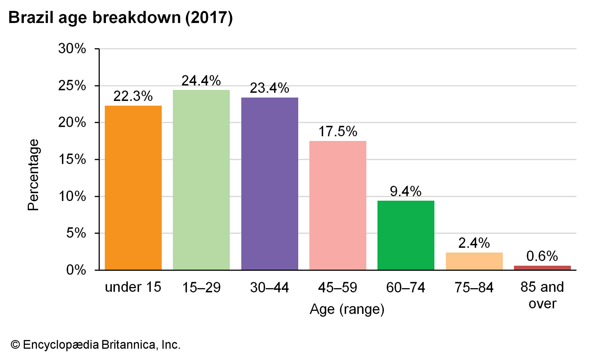
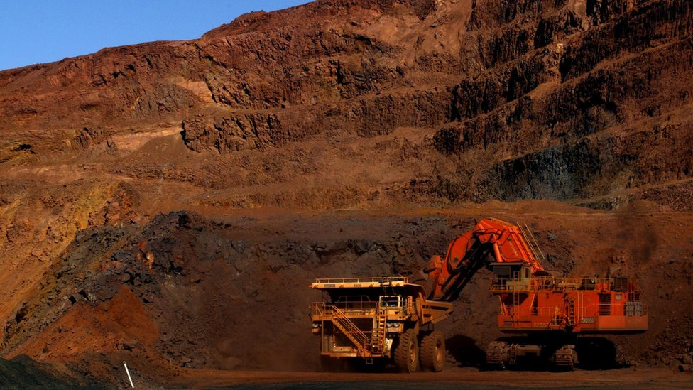
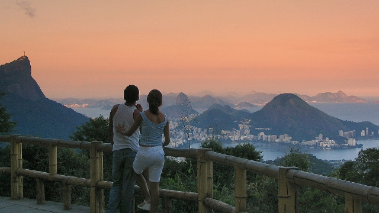

AGE DISTRIBUTION 
By the 1980s the proportion of people under 20 had declined to less than half of the total, and the trend continued into the early 21st century, when between one-fourth and one-fifth of Brazilians were recorded as being under age 15. During that time the proportion of people in the older age groups increased, so that nearly three-tenths of the population was age 45 and over.
Minerals in Rio De Janeiro Brazil contains extremely rich mineral reserves that are only partly exploited, including iron ore, tin, copper, pyrochlore (from which ferroniobium is derived), and bauxite. There are also significant amounts of granite, manganese, asbestos, gold, gemstones, quartz, tantalum, and kaolin (china clay). Most industrial minerals are concentrated in Minas Gerais and Pará, including iron ore, bauxite, and gold.
Best View for Sunset  The Vista Chinesa is an oriental-style pavilion, perched 1,246ft. in the verdant Tijuca Forest at the ascent of the Alto da Boa Vista. Offering stunning views of the city of Rio de Janeiro, the monument was erected in 1903 to honor the Chinese immigrant population of Rio de Janeiro.